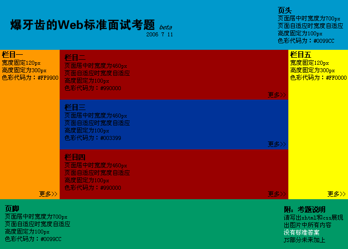

JavaScript的数据类型都有什么？
基本数据类型：String,boolean,Number,Undefined, Null
引用数据类型：Object(Array,Date,RegExp,Function)
那么问题来了，如何判断某变量是否为数组数据类型？
方法一.判断其是否具有"数组性质"，如slice()方法。可自己给该变量定义slice方法，故有时会失效
方法二.obj instanceof Array 在某些IE版本中不正确
方法三.方法一二皆有漏洞，在ECMA Script5中定义了新方法Array.isArray(), 保证其兼容性，最好的方法如下：
数据类型、面向对象、继承、闭包、插件、作用域、跨域、原型链、模块化、自定义事件、内存泄漏、事件机制、异步装载回调、模板引擎、Nodejs、JSON、ajax等。
已知ID的Input输入框，希望获取这个输入框的输入值，怎么做？(不使用第三方框架)
document.getElementById("ID").value
希望获取到页面中所有的checkbox怎么做？(不使用第三方框架)
var domList = document.getElementsByTagName(‘input’)
var checkBoxList = [];
var len = domList.length; //缓存到局部变量
while (len--) { //使用while的效率会比for循环更高
if (domList[len].type == ‘checkbox’) {
checkBoxList.push(domList[len]);
}
}
设置一个已知ID的DIV的html内容为xxxx，字体颜色设置为黑色(不使用第三方框架)
var dom = document.getElementById("ID");
dom.innerHTML = "xxxx"
dom.style.color = "#000"
当一个DOM节点被点击时候，我们希望能够执行一个函数，应该怎么做？
直接在DOM里绑定事件：<div onclick="test()">
在JS里通过onclick绑定：xxx.onclick = test
通过事件添加进行绑定：addEventListener(xxx, ‘click’, test)
什么是Ajax和JSON，它们的优缺点。
Ajax是异步JavaScript和XML，用于在Web页面中实现异步数据交互。
优点：
可以使得页面不重载全部内容的情况下加载局部内容，降低数据传输量
避免用户不断刷新或者跳转页面，提高用户体验
缺点：
对搜索引擎不友好（
要实现ajax下的前后退功能成本较大
可能造成请求数的增加
跨域问题限制
JSON是一种轻量级的数据交换格式，ECMA的一个子集
优点：轻量级、易于人的阅读和编写，便于机器（JavaScript）解析，支持复合数据类型（数组、对象、字符串、数字）
var foo = "11"+2-"1";
console.log(foo);
console.log(typeof foo);
已知数组var stringArray = ["This", "is", "Baidu", "Campus"]，Alert出"This is Baidu Campus"。
已知有字符串foo="get-element-by-id",写一个function将其转化成驼峰表示法"getElementById"。
function combo(msg){
var arr=msg.split("-");
for(var i=1;i<arr.length;i++){
arr[i]=arr[i].charAt(0).toUpperCase()+arr[i].substr(1,arr[i].length-1);
}
msg=arr.join("");
return msg;
}
var numberArray = [3,6,2,4,1,5];
实现对该数组的倒排，输出[5,1,4,2,6,3]
实现对该数组的降序排列，输出[6,5,4,3,2,1]
var numberArray = [3,6,2,4,1,5];
numberArray.reverse(); // 5,1,4,2,6,3
numberArray.sort(function(a,b){ //6,5,4,3,2,1
return b-a;
})
输出今天的日期，以YYYY-MM-DD的方式，比如今天是2014年9月26日，则输出2014-09-26
var d = new Date();
// 获取年，getFullYear()返回4位的数字
var year = d.getFullYear();
// 获取月，月份比较特殊，0是1月，11是12月
var month = d.getMonth() + 1;
// 变成两位
month = month < 10 ? '0' + month : month;
// 获取日
var day = d.getDate();
day = day < 10 ? '0' + day : day;
alert(year + '-' + month + '-' + day);
将字符串"<tr><td>{$id}</td><td>{$name}</td></tr>"中的
答案："<tr><td>{$id}</td><td>{$id}_{$name}</td></tr>".replace(/{\$id}/g, '10').replace(/{\$name}/g, ‘Tony’);
为了保证页面输出安全，我们经常需要对一些特殊的字符进行转义，请写一个函数escapeHtml，将<, >, &, "进行转义
foo = foo||bar ，这行代码是什么意思？为什么要这样写？
if(!foo) foo = bar; //如果foo存在，值不变，否则把bar的值赋给foo
短路表达式：作为"&&"和"||"操作符的操作数表达式，这些表达式在进行求值时，只要最终的结果已经可以确定是真或假，求值过程便告终止，这称之为短路求值。
var foo = 1;
function(){
console.log(foo);
var foo = 2;
console.log(foo);
}
用js实现随机选取10--100之间的10个数字，存入一个数组，并排序。
var iArray = [];
funtion getRandom(istart, iend){
var iChoice = istart - iend +1;
return Math.floor(Math.random() * iChoice + istart;
}
for(var i=0; i<10; i++){
iArray.push(getRandom(10,100));
}
iArray.sort();
把两个数组合并，并删除第二个元素。
var array1 = ['a','b','c'];
var bArray = ['d','e','f'];
var cArray = array1.concat(bArray);
cArray.splice(1,1);
怎样添加、移除、移动、复制、创建和查找节点
1创建新节点
createDocumentFragment() //创建一个DOM片段
createElement() //创建一个具体的元素
createTextNode() //创建一个文本节点
2添加、移除、替换、插入
appendChild() //添加
removeChild() //移除
replaceChild() //替换
insertBefore() //插入
3查找
getElementsByTagName() //通过标签名称
getElementsByName() //通过元素的Name属性的值
getElementById() //通过元素Id，唯一性
有这样一个URL：http://item.taobao.com/item.htm?a=1&b=2&c=&d=xxx&e，请写一段JS程序提取URL中的各个GET参数(参数名和参数个数不确定)，将其按key-value形式返回到一个json结构中，如{a:'1', b:'2', c:'', d:'xxx', e:undefined}。
function serilizeUrl(url) {
var result = {};
url = url.split("?")[1];
var map = url.split("&");
for(var i = 0, len = map.length; i < len; i++) {
result[map[i].split("=")[0]] = map[i].split("=")[1];
}
return result;
}
则表达式构造函数var reg=new RegExp("xxx")与正则表达字面量var reg=//有什么不同？匹配邮箱的正则表达式？
答案：当使用RegExp()构造函数的时候，不仅需要转义引号（即\"表示"），并且还需要双反斜杠（即\\表示一个\）。使用正则表达字面量的效率更高。
这个输出什么
for(var i=1;i<=3;i++){
setTimeout(function(){
console.log(i);
},0);
};
写一个function，清除字符串前后的空格。（兼容所有浏览器）
if (!String.prototype.trim) {
String.prototype.trim = function() {
return this.replace(/^\s+/, "").replace(/\s+$/, "");
}
}
// test the function
var str = " \t\n test string ".trim();
alert(str == "test string"); // alerts "true"
Javascript中callee和caller的作用？
实现一个函数clone，可以对JavaScript中的5种主要的数据类型（包括Number、String、Object、Array、Boolean）进行值复制
考察点1：对于基本数据类型和引用数据类型在内存中存放的是值还是指针这一区别是否清楚
考察点2：是否知道如何判断一个变量是什么类型的
考察点3：递归算法的设计
// 方法一：
Object.prototype.clone = function(){
var o = this.constructor === Array ? [] : {};
for(var e in this){
o[e] = typeof this[e] === "object" ? this[e].clone() : this[e];
}
return o;
}
//方法二：
/**
* 克隆一个对象
* @param Obj
* @returns
*/
function clone(Obj) {
var buf;
if (Obj instanceof Array) {
buf = []; //创建一个空的数组
var i = Obj.length;
while (i--) {
buf[i] = clone(Obj[i]);
}
return buf;
}else if (Obj instanceof Object){
buf = {}; //创建一个空对象
for (var k in Obj) { //为这个对象添加新的属性
buf[k] = clone(Obj[k]);
}
return buf;
}else{ //普通变量直接赋值
return Obj;
}
}
如何消除一个数组里面重复的元素？
var arr=[1,2,3,3,4,4,5,5,6,1,9,3,25,4];
function deRepeat(){
var newArr=[];
var obj={};
var index=0;
var l=arr.length;
for(var i=0;i<l;i++){
if(obj[arr[i]]==undefined)
{
obj[arr[i]]=1;
newArr[index++]=arr[i];
}
else if(obj[arr[i]]==1)
continue;
}
return newArr;
}
var newArr2=deRepeat(arr);
alert(newArr2); //输出1,2,3,4,5,6,9,25
小贤是一条可爱的小狗(Dog)，它的叫声很好听(wow)，每次看到主人的时候就会乖乖叫一声(yelp)。从这段描述可以得到以下对象：
function Dog() {
this.wow = function() {
alert(’Wow’);
}
this.yelp = function() {
this.wow();
}
}
小芒和小贤一样，原来也是一条可爱的小狗，可是突然有一天疯了(MadDog)，一看到人就会每隔半秒叫一声(wow)地不停叫唤(yelp)。请根据描述，按示例的形式用代码来实。（继承，原型，setInterval）
function MadDog() {
this.yelp = function() {
var self = this;
setInterval(function() {
self.wow();
},
500);
}
}
MadDog.prototype = new Dog();
//for test
var dog = new Dog();
dog.yelp();
var madDog = new MadDog();
madDog.yelp();
下面这个ul，如何点击每一列的时候alert其index?（闭包）
<ul id="test">
<li>这是第一条</li>
<li>这是第二条</li>
<li>这是第三条</li>
</ul>
// 方法一：
var lis=document.getElementById('2223').getElementsByTagName('li');
for(var i=0;i 3;i++)
{
lis[i].index=i;
lis[i].onclick=function(){
alert(this.index);
};
}
//方法二：
var lis=document.getElementById('2223').getElementsByTagName('li');
for(var i=0;i 3;i++)
{
lis[i].index=i;
lis[i].onclick=(function(a){
return function() {
alert(a);
}
})(i);
}
for(var i = 0; i < 5; i ++)
setTimeout(console.log(i),0);
for(var i = 0; i < 5; i ++)
setTimeout(function(){
console.log(i);
},0);
请评价以下代码并给出改进意见。
if (window.addEventListener) {
var addListener = function(el, type, listener, useCapture) {
el.addEventListener(type, listener, useCapture);
};
} else if (document.all) {
addListener = function(el, type, listener) {
el.attachEvent("on" + type,
function() {
listener.apply(el);
});
}
}
评价：
不应该在if和else语句中声明addListener函数，应该先声明；
不需要使用window.addEventListener或document.all来进行检测浏览器，应该使用能力检测；
由于attachEvent在IE中有this指向问题，所以调用它时需要处理一下
改进如下：
function addEvent(elem, type, handler){
if(elem.addEventListener){
elem.addEventListener(type, handler, false);
}else if(elem.attachEvent){
elem['temp' + type + handler] = handler;
elem[type + handler] = function(){
elem['temp' + type + handler].apply(elem);
};
elem.attachEvent('on' + type, elem[type + handler]);
}else{
elem['on' + type] = handler;
}
}
给String对象添加一个方法，传入一个string类型的参数，然后将string的每个字符间价格空格返回，例如：
addSpace("hello world") // -> 'h e l l o w o r l d'
String.prototype.spacify = function(){
return this.split('').join(' ');
};
定义一个log方法，让它可以代理console.log的方法。
function log(msg) {
console.log(msg);
}
log("hello world!") // hello world!
function log() {
console.log.apply(console, arguments);
};
在Javascript中什么是伪数组？如何将伪数组转化为标准数组？
Array.prototype.slice.call(fakeArray)
对作用域上下文和this的理解，看下列代码：
var User = {
count: 1,
getCount: function() {
return this.count;
}
};
console.log(User.getCount()); // what?
var func = User.getCount;
console.log(func()); // what?
想实现一个对页面某个节点的拖曳？如何做？（使用原生JS）
回答出概念即可，下面是几个要点
给需要拖拽的节点绑定mousedown, mousemove, mouseup事件
mousedown事件触发后，开始拖拽
mousemove时，需要通过event.clientX和clientY获取拖拽位置，并实时更新位置
mouseup时，拖拽结束
需要注意浏览器边界的情况
说出以下函数的作用是？空白区域应该填写什么？
//define
(function(window){
function fn(str){
this.str=str;
}
fn.prototype.format = function(){
var arg = ______;
return this.str.replace(_____,function(a,b){
return arg[b]||"";
});
}
window.fn = fn;
})(window);
//use
(function(){
var t = new fn('<p><a href="{0}">{1}^</a><span>{2}</span></p>');
console.log(t.format('http://www.alibaba.com','Alibaba','Welcome'));
})();
答案：访函数的作用是使用format函数将函数的参数替换掉{0}这样的内容，返回一个格式化后的结果：
第一个空是：arguments
第二个空是：/\{(\d+)\}/ig
var a = 1,
b = 2,
c = 3,
d = alert(e),
e = 2,
f = alert(typeof a);
(function() {
var a = b = 5;
})();
console.log(b);
console.log('mainbo'.repeatify(4));
//==>mainbomainbomainbomainbo
String.prototype.repeatify = String.prototype.repeatify || function(times) {
var str = '';
for (var i = 0; i < times; i++) {
str += this;
}
return str;
};
function test() {
console.log(a);
console.log(foo());
var a = 1;
function foo() {
return 2;
}
}
test();
var fullname = 'John Doe';
var obj = {
fullname: 'Colin Ihrig',
prop: {
fullname: 'Aurelio De Rosa',
getFullname: function() {
return this.fullname;
}
}
};
console.log(obj.prop.getFullname());
var test = obj.prop.getFullname;
console.log(test());
//Aurelio De Rosa
//John Doe
在浏览器中显示一个有颜色的框框，用javascript实现这个框框在浏览器的横向和纵向居中
1:固定宽度的居中(
1 ==>> div{
width:100px;
height:100px;
background:#f00;
margin:auto;
position:absolute;left:0;top:0;right:0;bottom:0;
}
2 ==>> div{
负边距居中;
}
);
2:JS
////////////////////////////////////////////////
function C( obj ) {
this.obj = obj;
this.initCenter();
};
C.prototype.getStyle = function(name) {
return parseFloat((this.obj.currentStyle? this.obj.currentStyle : window.getComputedStyle(this.obj, false))[name]);
};
C.prototype.initCenter = function() {
var clientW = document.documentElement.clientWidth || document.body.clientWidth;
var clientH = document.documentElement.clientHeight || document.body.clientHeight;
var scrollTop = document.documentElement.scrollTop || document.body.scrollTop;
var width = this.getStyle( "width" );
var height = this.getStyle( "height" );
this.obj.style.position = "absolute";
this.obj.style.left = (clientW-width)/2 + "px";
this.obj.style.top = scrollTop + (clientH-height)/2 + "px";
};
////////////////////////////////////////////////
var oDiv = document.getElementsByTagName("div")[0];
var c = new C( oDiv );
window.onresize = window.onscroll = function(){
c.initCenter()
};

请实现，鼠标点击页面中的任意标签，alert该标签的名称．（注意兼容性）
document.onclick=function(e){
e=e||window.event;
var o=e.srcElement||e.target;
alert(o.tagName);
};
var a = 6;
setTimeout(function () {
alert(a);
a = 666;
}, 1000);
a = 66;
HTTP、安全、正则、优化、重构、响应式、移动端、团队协作、可维护、SEO、UED、架构、职业生涯
1、你使用过那些Javascript库？
2、你是否研究过你所使用的JS库或者框架的源代码？
3、什么是哈希表？
4、'undefined'变量和'undeclared'变量分别指什么？
5、闭包是什么，如何使用它，为什么要使用它？
6、请举出一个匿名函数的典型用例？
7、请解释什么是Javascript的模块模式，并举出实用实例。
8、你如何组织自己的代码？是使用模块模式，还是使用经典继承的方法？
9、请指出Javascript宿主对象和内置对象的区别？
10、'.call'和'.apply'的区别是什么？
11、请解释'Funciton.prototype.bind'的作用？
12、你如何优化自己的代码？
13、你能解释一下JavaScript中的继承是如何工作的吗？
14、请指出浏览器特性检测，特性推断和浏览器UA字符串嗅探的区别？
15、请尽可能详尽的解释AJAX的工作原理。
16、请解释JSONP的工作原理，以及它为什么不是真正的AJAX。
17、你使用过JavaScript的模板系统吗？
18、请解释变量声明提升。
19、请描述下事件冒泡机制。
20、"attribute"和"property"的区别是什么？
21、'=='和'==='有什么不同？
22、你如何获取浏览器URL中查询字符串中的参数。
23、请解释一下JavaScript的同源策略。
24、请解释一下事件代理。
25、描述一种JavaScript memoization(避免重复运算)的策略。
26、什么是三元条件语句？
27、函数的参数元是什么？
1、你知道那些针对jQuery的优化方法。
2、请解释'.end()'的用途。
3、你如何给一个事件处理函数命名空间，为什么要这样做？
4、请说出你可以传递到jQuery方法的四种不同值。
5、请指出'.get()','[]','eq()',的区别。
6、请指出'.bing()','.live()'和'.delegate()'的区别。
7、请指出'$'和'$.fn'的区别？或者说出'$.fn'的用户。
1、描述css reset的作用和用途。
2、描述下浮动和它的工作原理。
3、清除浮动的方法有那些，分别适用于什么情形。
4、解释css sprites,如何使用。
5、你最喜欢的图片替换方法是什么，你如何选择使用。
6、如何为有功能限制的浏览器提供网页。
7、如何视觉隐藏网页内容，只让它们在屏幕阅读器中可用。
8、你使用过网格系统吗？如果使用过，你最喜欢哪种？
9、你使用过meidia queries（媒体查询）吗，或者移动网站相关的CSS布局。
10、你熟悉SVG样式的书写吗？
11、如何优化网页的打印样式。
12、在书写高效CSS文件时会有哪些问题需要考虑。
13、你是否接触过使用非标准字体的设计？
14、简述div元素和span元素的区别。
hide